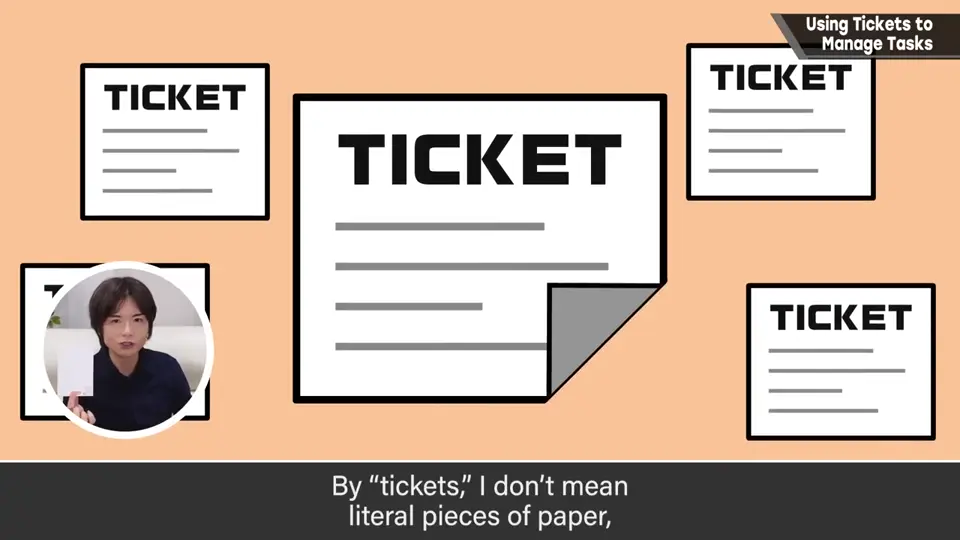
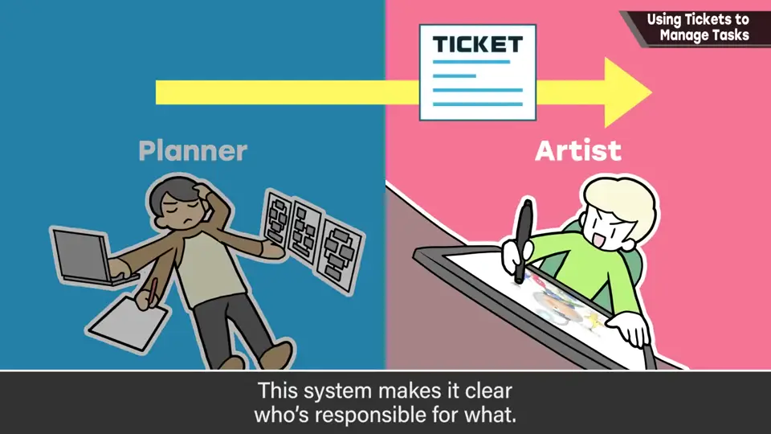
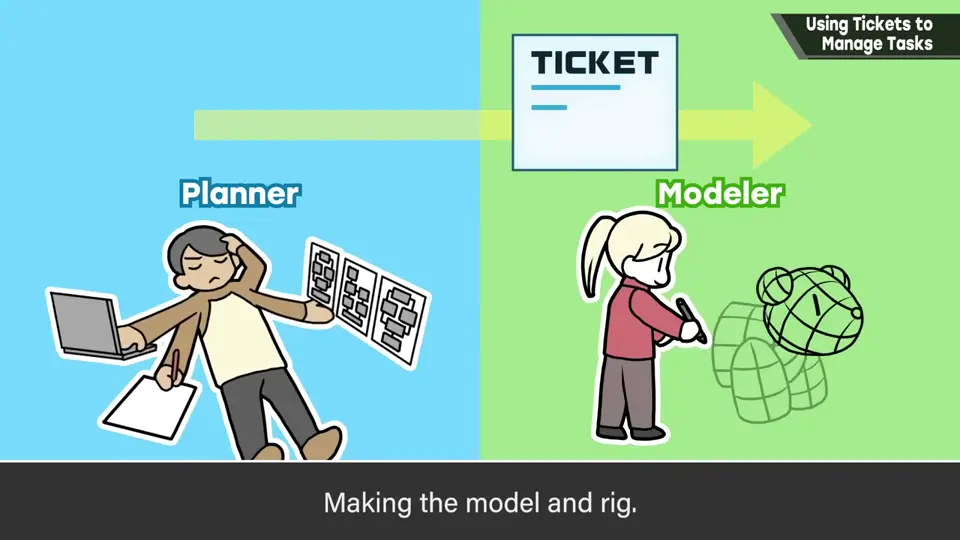
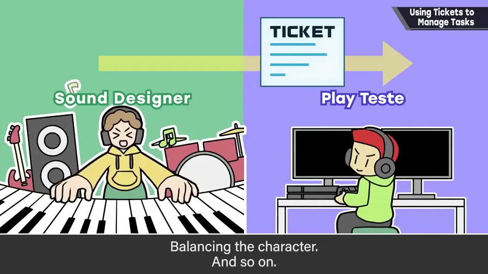
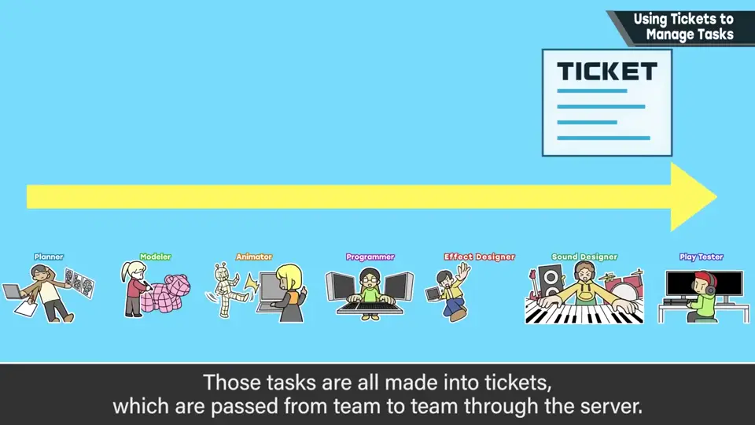
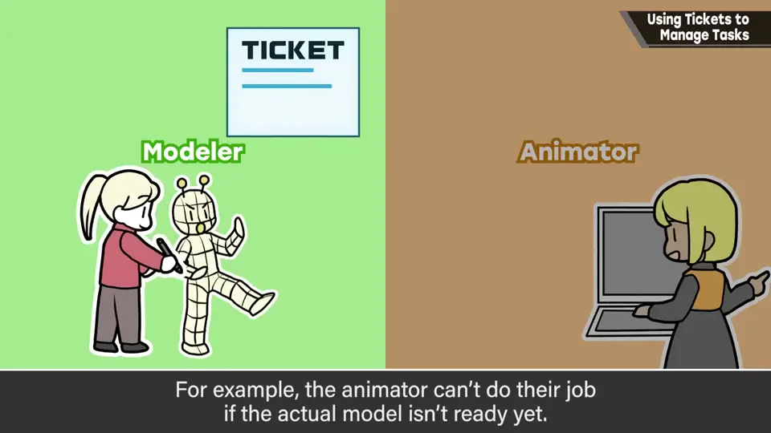
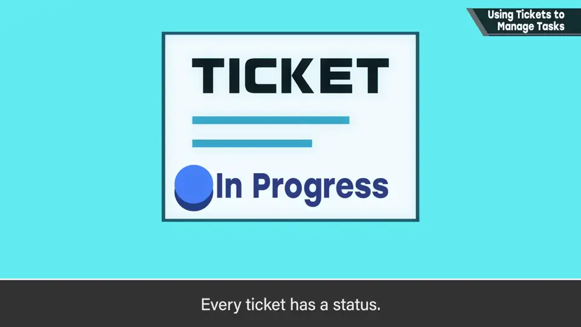
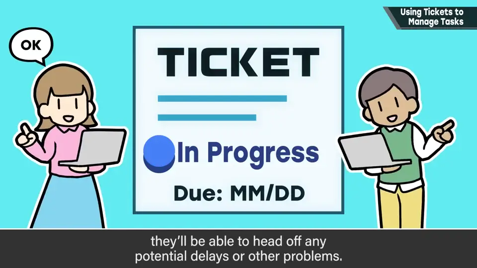
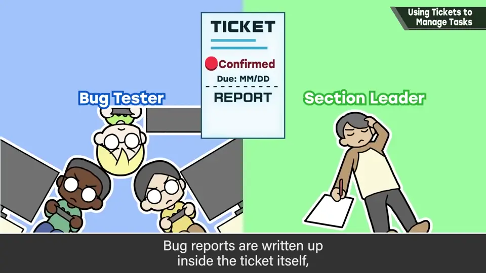
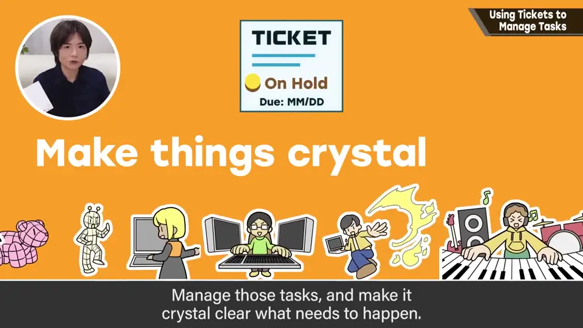

速览
这次的话题也许更适合「团队运营」分类，如今一定规模以上的作品大多这样做，但对在陌生工作环境中的人或游戏业界以外的人也许有参考价值。项目里几乎所有工作都被工单化：所谓工单不是纸质的票，而是用工具在服务器上管理的数字数据；它在负责人之间交接，持有这张工单的人就是要做这件事的人，一目了然。概要：做游戏里的一个角色也有很多步骤——决定企划、写规格书、做包括 rig 在内的模型、做动作、写程序、做特效、做音效、平衡调整等，各项工作被工单化并交接。服务器上为每项定好组长和负责人，能确认各自持有的工单，所以不会遗漏或忘记。工作有上下游时，同一张工单也可能跨职种，例如模型没做好就做不了动作；赶不上时也会预判着先开始下游制作，但最好别太串行。工单有状态：进行中、完成，以及保留、废弃等，借此判断情况。工单设有一定期限，组长和管理者能管理，便于发现延误和问题。调试也用工单：调试员拿到工单、确认、回传；bug 全在工单上写成报告，先分给部门组长再分配负责人；负责人不对或需跨多人时，会按判断转给别的负责人。叫法可能因工具而异，总之就是作业任务。都说作业的可视化很重要：管理任务、明确该做的事。以前没有这种机制，如今工单化重要到没有它就做不了工作。
1. 一切皆工单 0:03
这次的话题也许更适合「团队运营」分类。如今一定规模以上的作品大多这样做，但对在陌生工作环境中的人、或游戏业界以外的人也许有参考价值。
项目里几乎所有工作都被工单化。所谓工单不是纸质的票，而是用工具在服务器上管理的数字数据。


2. 做一个角色的流程 0:51
做游戏里的一个角色也有很多步骤：决定企划、写规格书、做包括 rig 在内的模型、做动作、写程序、做特效、做音效、平衡调整……各项工作都被工单化并交接。



服务器上为每项定好组长和负责人，能确认各自持有的工单，所以不会遗漏或忘记。
3. 上下游与状态 1:35
工作有上下游时，同一张工单也可能跨职种——例如模型没做好就做不了动作。赶不上时也会预判着先开始下游制作，但最好别太串行。


工单有状态：进行中、完成，以及保留、废弃等，借此判断情况。
工单还设有一定期限，组长和管理者都能管理，便于发现延误和问题。

4. 调试也用工单 2:18
调试也用工单：调试员拿到工单、确认、回传。bug 全部在工单上写成报告，先分给部门组长，再分配给负责人。

负责人不对、或需要跨多人时，会按判断转给别的负责人。
5. 任务可视化 2:43
叫法可能因工具而异，总之就是作业任务。

自测题
1. 什么是工单？
用工具在服务器上管理的数字任务；在负责人间交接，持有者就是负责人。 0:03
2. 工单有哪些状态？
进行中、完成、保留、废弃等。 1:35
3. 工单如何用于调试？
bug 写成工单报告，先给部门组长，再分配负责人，必要时转给他人。 2:18